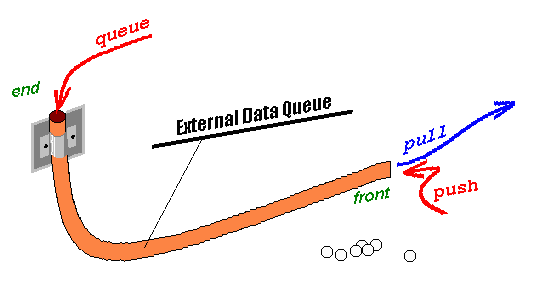
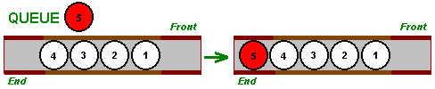
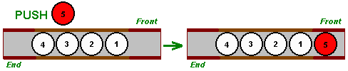
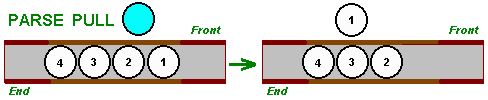

Máte rádi Rexx a začínáte s AS/400? Můžete používat AS/400 a zároveň číst můj článek?
Tak neváhejte a vyzkoušejte si sami možnosti jazyka Rexx v tomto prostředí. Na této
úvodní cestě Od Rexxu k AS/400 vám řeknu JAK, aniž bychom se zdržovali tím PROČ.
Budete-li následovat moje pokyny, překonáte
Pohoří Tisíce Manuálů i Řeku Omezení a nemusíte se bát ani
nejvyšší hory
Mt. CL - přes 2000 commands vysoké!)
Kapitola 1: [Jak napsat a spustit program]
Kapitola 2: [Standardní vstup a výstup]
Kapitola 3: [Externí datová fronta]
Kapitola 4: [SQL povely]
Zkusíme si napsat malý, jednoduchý, možná i užitečný program a spustíme ho. Nejdříve ze
všeho si ale musíme vytvořit složku, do které budeme svoje dílka ukládat - soubor
zdrojových textů.
Prohlédneme si spolu (pro mě užitečný) program DSPLIBF napsaný v jazyce Rexx a
pracující v prostředí systému AS/400. Vznikl proto, abych mohl snadno dostat výstupní
informace o knihovně do souboru. CL povel DSPLIB má syntaxi:
DSPLIB LIB(library) OUTPUT({*|*PRINT})
Parametr OUTPUT určuje, zda informace o knihovně půjdou na displej (*) nebo na tiskárnu, přesněji řečeno do spoolu (*PRINT). Program DSPLIBF rozšiřuje možnosti povelu DSPLIB a ukládá výstupní informaci o vybrané knihovně do souboru INFO v knihovně MYLIB.
/* DSPLIBF */
parse arg Knihovna
do while Knihovna = ""
say "Zadejte jméno knihovny"
parse linein Knihovna
end
'DSPLIB' Knihovna 'OUTPUT(*PRINT)'
'CHKOBJ MYLIB/INFO *FILE'
if RC <> 0 then 'CRTPF MYLIB/INFO RCDLEN(132)'
'CPYSPLF FILE(QPDSPLIB) TOFILE(MYLIB/INFO) SPLNBR(*LAST)'
if RC = 0 then say 'OK'; else say 'Chyba'
CRTSRCPF FILE(MYLIB/QREXSRC)
Teď už můžete v knihovně zdrojových textů vytvořit svůj první program. Povel
WRKMBRPDM FILE(MYLIB/QREXSRC)
zobrazí:
Work with Members Using PDM
File . . . . . . QREXSRC
Library . . . . MYLIB Position to . . . .
Type options, press Enter.
2=Edit 3=Copy 4=Delete 5=Display 6=Print
8=Display description 9=Save 13=Change text 14=Compile
Opt Member Type Text
(No members in file)
V zobrazeném formuláři vyplňte jméno programu (DSPLIBF), jeho typ (REXX), můžete připojit i vysvětlující poznámku, chcete-li (Výstup DSPLIB do souboru INFO). Stisknutím klávesy Enter formulář odešlete systému.
Start Source Entry Utility (STRSEU)
Type choices, press Enter.
Source file . . . . . . . . . . . > QREXSRC Name, *PRV
Library . . . . . . . . . . . . > MYLIB Name, *LIBL,
Source member . . . . . . . . . . DSPLIBF Name, *PRV,
Source type . . . . . . . . . . . REXX Name, *SAME,
Text 'description' . . . . . . . . Output from DSPLIB into the INFO
V editoru přepíšete text programu DSPLIBF. Editování ukončíte klávesou F3:
Columns . . . : 1 71 Edit
SEU==>
FMT ** ...+... 1 ...+... 2 ...+... 3 ...+... 4 ...+... 5 ...+..
*************** Beginning of data ***********************
'''''' /* DSPLIBF */
''''''
V obrazovce nadepsané Exit potvrďte klávesou Enter uložení zdrojového textu do členu DSPLIBF v souboru QREXSRC. V následující obrazovce Work with Members Using PDM napište na pole pro zadání volby číslo 16, tj. Run a stiskněte F4 pro zadání parametrů.
Work with Members Using PDM
File . . . . . . QREXSRC
Library . . . . MYLIB Position to . . . .
Type options, press Enter.
2=Edit 3=Copy 4=Delete 5=Display 6=Print
8=Display description 9=Save 13=Change text 14=Compile
Opt Member Type Text
16 DSPLIBF REXX Output from DSPLIB into the INFO
Napište jméno knihovny do pole parametrů; stisknutím klávesy Enter program odstartujete. Ovšem, program DSPLIBF jste mohli pustit rovnou, v předchozím kroku místo F4 stisknout Enter, on už by si o jméno knihovny řekl sám.
Start REXX Procedure (STRREXPRC)
Type choices, press Enter.
Source member . . . . . . . . . > DSPLIBF Name
Source file . . . . . . . . . . > QREXSRC Name
Library . . . . . . . . . . . > MYLIB Name, *LIBL
Parameters . . . . . . . . . . . MYLIB
STRREXPRC SRCMBR(DSPLIBF) SRCFILE(MYLIB/QREXSRC) PARM(MYLIB)
Start of terminal session.
OK
Press ENTER to end terminal session.
DSPPFM FILE(MYLIB/INFO)
Display Physical File Member
File . . . . . . : INFO Library . . . . : MYLIB
Member . . . . . : INFO Record . . . . . : 1
Control . . . . . Column . . . . . : 1
Find . . . . . . .
*...+....1....+....2....+....3....+....4....+....5....+....6....+..
5763SS1 V3R2M0 960517 Display Library
Library . . . . . . . . . . . . . : MYLIB
Type . . . . . . . . . . . . . . : PROD
Příkazem parse linein můžeme číst z jediného souboru STDIN a příkazem
say zapisovat do jediného souboru STDOUT. Oba soubory musí být určeny
před jejich prvním použitím, jednou jen a pak už ne. Omezení? Ukážu vám první
možnost, jak je překonat.
Programy v jazyce Rexx se vždy interpretují. Mohou být spuštěny buď v interaktivním
prostředí (tak tomu bylo v předcházejícím příkladě) nebo v dávkovém prostředí.
Interpretovaný program má přístup ke dvěma souborům pro standardní vstupní a výstupní
operace. Standardním souborem pro vstup je STDIN; standardním souborem pro výstup je
STDOUT. Je tu ještě jeden výstupní soubor, totiž STDERR, který používá interpret k
zápisu chybových hlášení a informací o průběhu výpočtu vyžádaných příkazem trace.
Příkaz parse linein čte ze souboru STDIN a příkaz say zapisuje
do souboru STDOUT.
Implicitně se v interaktivním režimu považuje za STDIN klávesnice a za STDOUT displej. V dávkovém režimu se implicitně považuje za STDIN soubor se jménem QINLINE a za STDOUT spoolový soubor QPRINT.
Implicitní nasměrování souborů STDIN a STDOUT můžete změnit pomocí CL povelů začínajících OVR..., ale tyto povely musí být vydány před prvním použitím souboru STDIN nebo souboru STDOUT a v průběhu programu už nasměrování nelze znovu změnit. Možná si teď říkáte Chudáček Rexx, co to s ním v té čtyřstovce udělali ....
Ukážu vám, jak se mohou snadno spojit silné prostředky jazyka Rexx a AS/400 pro extrémně snadné řešení jinak nijak jednoduché úlohy.
Naším cílem bude napsat program, který v zadaném textu (předložen na vstupu jako
první člen souboru INFO v knihovně MYLIB) určí, kolikrát se v něm to které slovo
vyskytlo. Pojmem slovo tu rozumím posloupnost znaků neobsahující mezeru, jak je v
Rexxu obvyklé. Řešení ukazuje následující program KOLIKRAT:
/* KOLIKRAT */
Citac = 0
'RTVMBRD FILE(MYLIB/INFO) MBR(*FIRST) NBRCURRCD(&CITAC)'
'OVRDBF FILE(STDIN) TOFILE(MYLIB/INFO)'
Kolikrat. = 0; Ruzne = ""
do Citac
parse linein Veta
do J = 1 to WORDS(Veta)
Slovo = WORD(Veta, J)
if Kolikrat.Slovo = 0 then Ruzne = Ruzne Slovo
Kolikrat.Slovo = Kolikrat.Slovo + 1
end
end
do J = 1 to WORDS(Ruzne)
Slovo = WORD(Ruzne, J); say Kolikrat.Slovo Slovo
end
SBMJOB CMD(STRREXPRC SRCMBR(HOWMANY) SRCFILE(MYLIB/QREXSRC))
KOLIKRAT opravdu užitečný, musí být výsledek
utříděn. Jak to udělat co nejjednodušeji? Využívej systémových prostředků radí
Jon Bentley v knize Programming Pearls. V systému OS/400 je nejjednodušším řešením
zapsat výsledek do souboru a tento soubor pak jednoduše utřídit předem připraveným
dotazem (tzv. query v terminologii AS/400) s výstupem na displej. Query/400 je
generátor výstupních sestav z databázových souborů. Je jednoduchý a snadno se jej
naučíte používat. Vytvoření a použití query vám opět ukážu krok za krokem.
Nejprve pomocí povelu systému
CRTPF MYLIB/OUTPUT RCDLEN(80)
vytvoříme soubor OUTPUT. Budeme předpokládat, že v něm budou zapsány dvojice hodnot
počet výskytů slova a slovo samo oddělené mezerou. Teď sestavíme potřebné query na tento
soubor. Napište WRKQRY na povelovou řádku a stiskněte Enter. Formulář, který se objeví
na obrazovce, vyplňte, jak je ukázáno na dalším obrázku a stiskněte Enter.
Work with Queries
Type choices, press Enter.
Option . . . . . . 1 1=Create, 2=Change, 3=
5=Display, 6=Print def
8=Run in batch, 9=Run
Query . . . . . . . SAYWORD Name, F4 for list
Library . . . . . MYLIB Name, *LIBL, F4 for li
Stiskněte Enter v obrazovce Define the Query s implicitní hodnotou 1 (tj. Select) v poli volby u kolonky Specify file selections. V následující obrazovce Specify File Selection napište jméno souboru (OUTPUT) a jméno knihovny (MYLIB). Stiskněte Enter.
Specify File Selections
Type choices, press Enter. Press F9 to specify an additional
file selection.
File . . . . . . . . . OUTPUT Name, F4 for
Library . . . . . . MYLIB Name, *LIBL, F4 for
Member . . . . . . . . *FIRST Name, *FIRST, F4 for
Format . . . . . . . . *FIRST Name, *FIRST, F4 for
Select Sort Fields
Type sort priority (0-999) and A (Ascending) or D (Descendin
the names of up to 32 fields, press Enter.
Sort
Prty A/D Field Text
1 D OUTPUT
Změňte program KOLIKRAT tak, aby dvojice hodnot počet výskytů a slovo
byly uloženy do souboru OUTPUT. Protože výsledek bude tříděn podle počtu výskytů,
použijte příkaz:
say FORMAT(Kolikrat.Slovo, 5) Slovo
Přidejte k programu KOLIKRAT provedení query SLOVA a na samém začátku
vymažte momentální obsah souboru OUTPUT povelem
CLRPFM FILE(MYLIB/OUTPUT).
/* KOLIKRAT */
'CLRPFM FILE(MYLIB/OUTPUT)'
'OVRDBF FILE(STDOUT) TOFILE(MYLIB/OUTPUT)'
Citac = 0
'RTVMBRD FILE(MYLIB/INFO) MBR(*FIRST) NBRCURRCD(&CITAC)'
'OVRDBF FILE(STDIN) TOFILE(MYLIB/INFO)'
Kolikrat. = 0; Ruzne = ""
do Citac
parse linein Veta
do J = 1 to WORDS(Veta)
Slovo = WORD(Veta, J)
if Kolikrat.Slovo = 0 then Ruzne = Ruzne Slovo
Kolikrat.Slovo = Kolikrat.Slovo + 1
end
end
do J = 1 to WORDS(Ruzne)
Slovo = WORD(Ruzne, J)
say FORMAT(Kolikrat.Slovo, 5) Slovo
end
'RUNQRY QRY(MYLIB/SLOVA)'
Display Report
Query . . . : MYLIB/SAYWORD Report width . . .
Position to line . . . . . Shift to column . . .
Line ....+....1....+....2....+....3....+....4....+....5....+.
OUTPUT
000001 66 .
000002 10 *
000003 7 :
000004 2 1
Představím vám podrobně externí datovou frontu (tentokrát dokonce ani nepředpokládám vaši znalost tohoto mechanizmu v "klasickém" Rexxu). Představím vám ji jako prostředek pro komunikaci mezi programy, jako prostředek vstupu a výstupu, jako užitečnou datovou strukturu - frontu, zásobník, ...
Externí datová fronta (External Data Queue) je systémový objekt AS/400, obsahující posloupnost položek, podobných větám souborů. Po startu úlohy (job), v interaktivním prostředí po přihlášení pomocí povelu SIGN ON, se externí datová fronta vytvoří a je dostupná všem programům úlohy po celou dobu jejího trvání, v interaktivním prostředí tedy až do provední povelu SIGNOFF. Jeden program může položky do fronty uložit, druhý přečíst - fronta plní úlohu zařízení pro komunikaci mezi programy.
Užitečnou analogií pro pochopení mechanizmu fronty je představovat si ji jako hadici od vysavače (prohlédněte si následující obrázek) s vyznačeným začátkem a koncem. Jak vidíte, můžete ukládat pinpongové míčky (položky) z obou stran, ale vypadnout vám mohou jen z jejího začátku.

queue přidá na konec fronty novou položku.

push přidá na začátek fronty novou položku.
queue.

parse pull přečte položku ze začátku fronty, je-li však fronta prázdná, pak příkaz
parse pull bude číst ze souboru STDIN.

QUEUED() vrací počet položek ve frontě.
4 8 31 46 47
/* MICHEJ */
Balicek = ""
if QUEUED() = 0 then do
do J = 1 to 52; Balicek = Balicek J; end
push Balicek
end
push TIME("S")
ROZDEJ, tak z externí datové fronty odebere položku s časem a balíček karet. Z časového záznamu a momentálního času určí číslo od 1 do počtu karet v balíčku - tj. vybere náhodně jednu kartu. Vybere ji doslova, protože ji zobrazí (příkazem say) a odstraní z balíčku (pomocí funkce DELWORD).
/* ROZDEJ */
parse pull T; parse pull Balicek
J = ABS(TIME("S") - T) // WORDS(Balicek) + 1
say "Rozdána karta" WORD(Balicek, J)
if WORDS(Balicek) > 1 then push DELWORD(Balicek, J, 1)
MICHEJ - ROZDEJ -
MICHEJ - ... počítač míchá a rozdává karty.
Po skončení programu MICHEJ můžete dělat cokoliv jen se neodhlašujte
povelem SIGNOFF a neměňte obsah externí datové fronty.
/* XAMINE */
do QUEUED()
parse pull Polozka; say Polozka; queue Polozka
end
do until Odpoved = "A" | Odpoved = "N"
say "Vyjmout polozky z fronty? (A/N)"
parse upper linein Odpoved
end
if Odpoved = "A" then 'RMVREXBUF 0'
IBM DB2 je systém řízení databáze, který implementuje relační model dat. Z pohledu uživatele je relační databáze množinou tabulek (souborů). Každý řádek (věta) tabulky obsahuje množinu sloupců (polí). Všechny řádky tabulky mají tutéž formu.
Operace s daty se provádí pomocí jazyka Structured Query Language - SQL. Tento jazyk umožňuje vytvářet, modifikovat, rušit tabulky; vyhledávat, měnit, rušit data v tabulkách; přidávat data do tabulek. Tím, že povely SQL můžete uvádět v textu svých programů, jsou překonána všechna omezení kladená na příkazy vstupu a výstupu u jazyka Rexx v prostředí AS/400.
Ukažme si možnosti a způsob využití SQL: Vytvoříme si jednoduchý oboustranný
anglicko-česko-anglický slovník a napíšeme si program pro jeho praktické využívání.
Slovník vytvoří program SLOVNIK:
/* SLOVNIK vytváří anglicko-česko-anglický slovnik */
address EXECSQL
EXECSQL 'SET OPTION COMMIT = *NONE'
EXECSQL 'CREATE TABLE MYLIB/DICTIONARY',
' (E_SLOVO CHAR(20) NOT NULL,',
' C_SLOVO CHAR(20) NOT NULL)'
INS = 'INSERT INTO MYLIB/DICTIONARY VALUES(?, ?)'
EXECSQL 'PREPARE I1 FROM :INS'
say "Napiš dvojice slov: anglické-české"
do forever
say "anglické-české"
parse linein E "-" C
if E = "" then leave
EXECSQL 'EXECUTE I1 USING :E, :C'
if RC = 0 then say "OK"; else say "Chyba, RC =" RC
end
'SET OPTION COMMIT = *NONE'
'PREPARE I1 FROM :INS'
'INSERT INTO MYLIB/DICTIONARY VALUES(?, ?)'
'EXECUTE I1 USING :E, :C'
SLOVNIK při vytváření slovníku:
Start of terminal session.
Napiš dvojice slov: anglické-české
abandon-opustit
OK
abandon-vzdát se
OK
abandon-oddávat se
OK
abbey-opatství
OK
abbreviation-zkratka
OK
abdicate-vzdát se
OK
Press ENTER to end terminal session.
HLEDEJ, budeme oboustranný slovník využívat.
/* HLEDEJ překlad v anglicko-česko-anglickém slovníku */
address EXECSQL
EXECSQL 'SET OPTION COMMIT = *NONE'
do until Odpoved = "A" | Odpoved = "C"
say "Anglicko->český nebo česko->anglický? (A/C)"
parse upper linein Odpoved
end
Vyzva.A = "Word to translate"; Vyzva.C = "Napiš slovo"
if Odpoved = "A" then
SEL = 'SELECT C_SLOVO FROM MYLIB/DICTIONARY WHERE E_SLOVO = ?'
else
SEL = 'SELECT E_SLOVO FROM MYLIB/DICTIONARY WHERE C_SLOVO = ?'
EXECSQL 'PREPARE S1 FROM :SEL'
EXECSQL 'DECLARE C1 CURSOR FOR S1'
do forever
say Vyzva.Odpoved; parse linein Slovo
if Slovo = "" then leave
EXECSQL 'OPEN C1 USING :SLOVO'
do forever
EXECSQL 'FETCH C1 INTO :PREKLAD'
if SQLCODE <> 0 then leave
say COPIES(" ", 10) Preklad
end
say COPIES(" ", 10) ".."; EXECSQL 'CLOSE C1'
end
HLEDEJ:
Start of terminal session.
Anglicko->český nebo česko->anglický? (A/C)
A
Word to translate:
abandon
opustit
vzdát se
..
Word to translate:
robot
..
Word to translate:
abbreviation
zkratka
..
Word to translate:
Press ENTER to end terminal session.
Zvláštností jazyka Rexx v prostředí AS/400 je vstup a výstup. Je zvláštností, ale, jak jste mohli vidět, není omezením. Vaše aplikace mohou využívat standardní vstup a výstup, externí datovou frontu, kouzla AS/400, jakým je třeba Query/400, a také veškeré možnosti jazyka SQL při přístupu k relační databázi. V prostředí AS/400, kde je jen jediná relační databáze, to znamená, že tyto povely můžete používat při práci s libovolnými soubory.
aktualizováno 15. srpna 2021 Copyright © 1998-2021 Vladimír Zábrodský, Blansko
zabrodsky(DOT)v(AT)seznam(DOT)cz